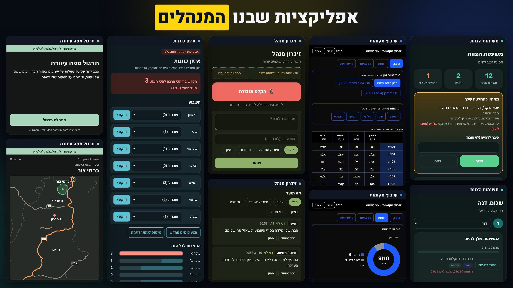

סיכום סדנת המנהלים · 2.11.2026

בחרו כלי כדי לראות מתי משתמשים בו, מה המסרים שלו, ואיפה בדיוק נכנס האדם.
משלימים את השדות ישירות בטקסט ומעתיקים. המילים שבחרתם נכנסות להעתקה.
כדאי לענות בלי להציץ בחומר. השאלות לקוחות מהסדנה.
התרגיל מהבוקר, על משימה מהיחידה שלכם. כאן מסומנת דוגמה, ואפשר לשנות אותה.
כרטיס היציאה מסוף היום. מה שתכתבו נשמר רק בדפדפן שלכם, ואפשר להעתיק אותו.
סקר הסיום האנונימי, צילום מצב של 12 תשובות מיום הסדנה.
7 ממליצים, ציון 9 או 10. 5 ניטרליים, ציון 7 או 8. אף אחד לא נתן 6 ומטה.
9 מתוך 12 יבנו אפליקציה בלי קוד, ו-3 יעבדו עם Gemini Notebook.
לשמור
לשנות
הרצאת המבוא על סוכנים: 5 אמרו שעזרה מאוד בהתנסות, 3 חלקית, 4 לא ממש.
כללי ברזל להמשך: לא מעלים לאף כלי חומר מסווג או מידע אישי, ובאפליקציות עובדים רק עם נתוני דוגמה.